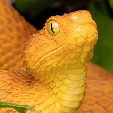
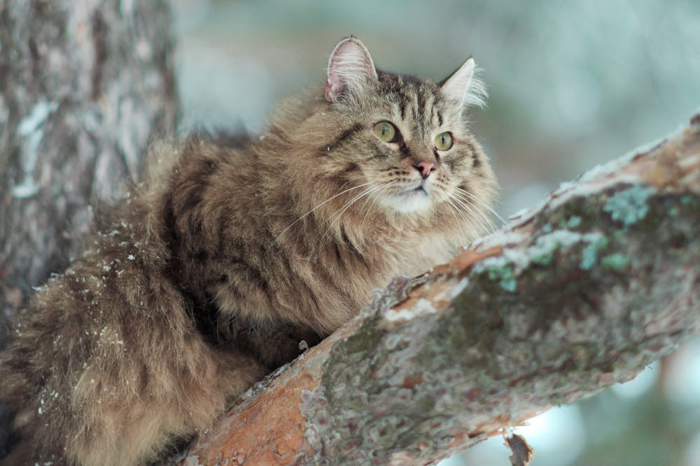
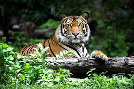

Żmije Viperinae
Żmije Viperinae to podrodzina węży z rodziny żmijowatych (Viperidae), do której należy wiele gatunków
węży jadowitych, znanych z charakterystycznych cech morfologicznych oraz agresywnego zachowania. Występują
one głównie w Europie, Azji i Afryce.Żmije Viperinae są fascynującymi i dobrze przystosowanymi zwierzętami,
które odgrywają ważną rolę w ekosystemach, regulując populacje małych zwierząt. Jednak ze względu na ich
jadowitość należy zachować ostrożność podczas ich spotkań w naturze.

Siberian Cat
Kot syberyjskio naturalna rasa kota, pochodząca z Rosji, która wyróżnia się swoją mocną budową, długą, gęstą sierścią
oraz przyjaznym charakterem. Jest to rasa bardzo przystosowana do trudnych warunków klimatycznych Syberii,
gdzie długie, surowe zimy wymagają od tych kotów wyjątkowej odporności i wytrzymałości Kot syberyjski to rasa o
niezwykle uroczej, towarzyskiej naturze, mocnej budowie i pięknej sierści. Dzięki swojej odporności na surowe warunki
klimatyczne Syberii oraz inteligencji, jest doskonałym towarzyszem dla osób szukających aktywnego i przyjacielskiego
kota.

Tygrys
Tygrys to największy przedstawiciel rodziny kotowatych, który jest symbolem dzikiej siły, piękna i majestatu.
Występuje głównie w Azji, a jego charakterystyczne ubarwienie, silna budowa i zdolności łowieckie czynią go jednym z
najbardziej rozpoznawalnych i cenionych zwierząt na świecie. Tygrys to jedno z najbardziej niezwykłych i potężnych
zwierząt na naszej planecie, będące symbolem siły i dzikości. Niestety, jego populacja jest zagrożona,
dlatego tak ważne jest prowadzenie działań na rzecz jego ochrony i zachowania naturalnych siedlisk.
